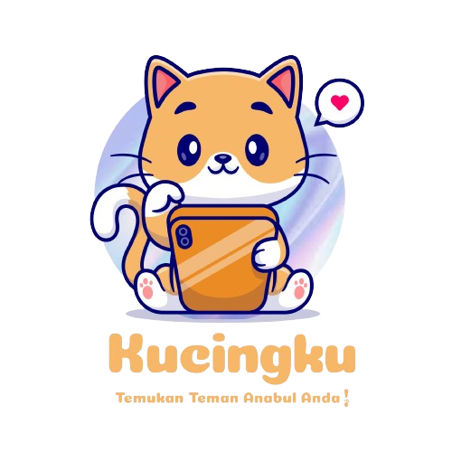

Home
Get Recommendations
Cat Dataset
Log Out
Cat Preference
Jenis Kelamin Kucing:
Pilih jenis kelamin kucing
Jantan
Betina
Usia Kucing:
Pilih usia kucing
Baby (< 1 Tahun)
Young (1-2 Tahun)
Adult (> 2 Tahun)
Warna Kucing:
Pilih warna kucing
Hitam
Putih
Coklat
Abu-abu
Orange
Status Vaksinasi:
Pilih status vaksinasi kucing
Sudah divaksin
Belum divaksin
Submit!